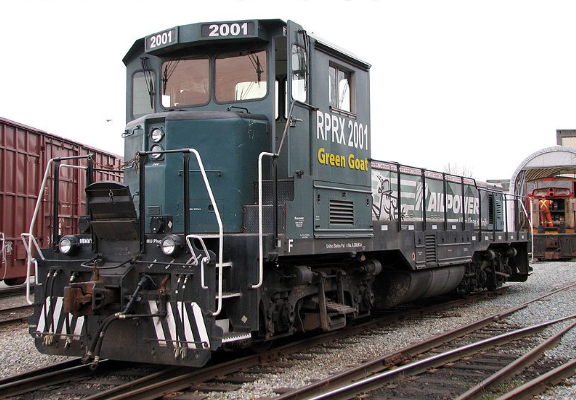
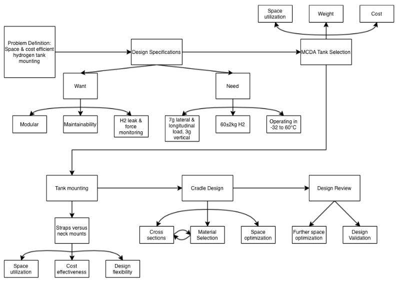
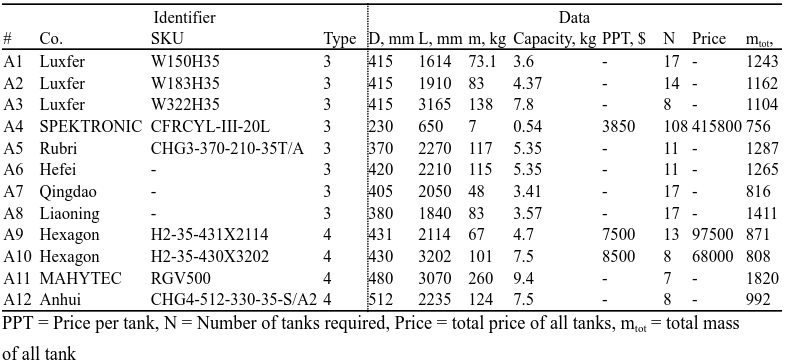
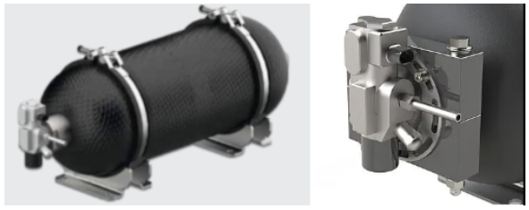
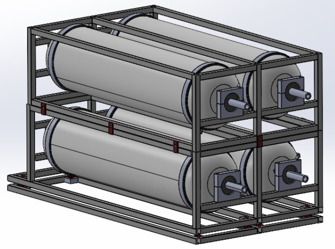
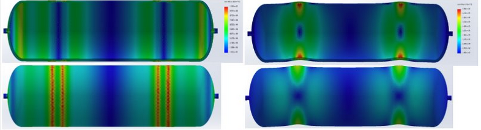
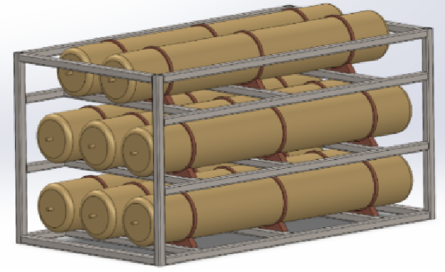
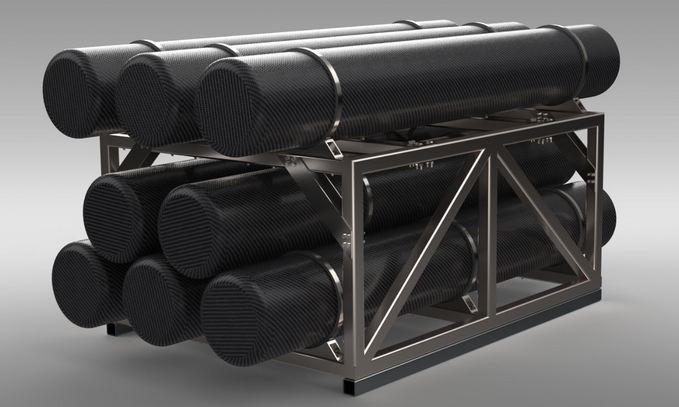

Our capstone project focused on designing a modular hydrogen tank cradle for the Green Goat switching locomotive, intended to safely store compressed hydrogen under severe railway operating conditions while fitting inside a highly constrained retrofit envelope. The cradle had to satisfy four competing objectives simultaneously: withstand dynamic rail loads up to 7g, accommodate tank expansion during refueling, remain maintainable for field servicing, and stay within the client’s allowable budget of $100,000 + 25% flexibility. The available installation space inside the locomotive was limited to approximately 1200 mm height, 1866 mm width, and 3364 mm length, making geometric efficiency the dominant design constraint.

Our complete design report is available below for download here if desired.
My personal objectives for my Capstone project were:
1. Apply engineering processes and knowledge to a project.
2. Judge how interesting working in the railway industry would be.
3. Make contacts with both railway and non-railway engineering industry insiders.
4. Learn how to solve problems outside of the scope of a course with easily available relevant information, instead learning about project-specific information with external resources.
Our project process was rather iterative, however it can be boiled down into the following steps:

First, we needed to define our problem, which is absolutely critical to the project success. Without a well-defined problem, the client can be unsatisfied with our design and ultimately be worse off compared to where they were initially, either financially and/or time-wise. After an initial meeting to clarify the project description of the capstone proposal and identifying stakeholders in our project, we realized that we would need to build a space and cost effective solution to containing hydrogen tanks. Having defined this, we needed to formulate design specifications.
After brainstorming relevant criteria and discussing with the client, we realized that our design had lots of aspects which were more of a preference rather than required performance necessities. Because of this, we decided to classify our design specifications into wants and needs. This distinction allowed us to focus our design on aspects which were more critical to the performance. As seen in the flowchart above, the primary required design specifications included load requirements, hydrogen capacity requirements, and operating conditions. Whereas our primary desired design specifications included modularity, maintainability, and operational aids. A complete list of design specifications, their classifications, and associated measurement criteria may be found in our final report.
Tank selection became the most influential design decision because hydrogen tanks represented nearly 90% of total project cost and dictated the entire cradle geometry. We initially evaluated 12 commercial tanks using a MCDA method (which is described in detail in our final report), weighting cost twice as heavily as weight because tank pricing dominated total project economics. However, dimensional constraints eliminated most options immediately, since only tanks fitting within the locomotive envelope and available with quoted supplier pricing could remain viable. The tanks we considered,'alternatives' may be seen below.

Although both Type III and Type IV tanks were considered, the final selection was an 8-tank Type IV Hexagon Purus configuration, chosen because it was the only commercially quoted option that satisfied both capacity and geometric requirements.
Mounting hydrogen tanks to a fixed point is quite difficult, as hydrogen tanks are prone to expanding and contracting, both length-wise and radially, as they are refilled and emptied. This limits the available mounting options to those which have already been well defined by the market, either a single rigid 'neck mount' which contrained the tank at one end, or multiple radially-flexible hoop-and-saddle mounts. The saddle mounts were utilized as they could meet the massive load requirements of the cradle and only came with minor drawbacks in the form of needing replacement as they aged.

As our tank selection, tank mounting, and tank packing ideas evolved, so did our cradle design.
Our first design maximized the modularity design criteria, and included a suspension system which was designed to prevent the immense loads required from rupturing the tanks. For this preliminary design, the tanks were considered to be generalized hydrogen tanks in a 2x2 configuration. This made the assembly very large, significantly outside of the space available for the design.


After selecting our tank, a FEM analysis was performed on the hydrogen tanks, considering only the rigid carbon fiber wrap as load bearing in order to assess whether the tank structure would be susceptible to damage. The tanks were subjected to 7g lateral and longitudinal loads emminating from 2 mounts, utilizing a fine mesh and estimated full tank weights. Resulting from this, we found that the tanks would have very high safety factors, and thus we decided to remove the suspension system from our design. This significantly reduced the design cost, complexity, and space required.Another focus of this design was to reduce the size and increase maintainability by reducing the level of modularity of our design. Previously, each tank had its own containing frame, each of which were bolted together to form the entire assembly. With this update, the collection of 8 required tanks was taken as one module, which better fit the purpose of the modularity desired from the project. This is because the idea of the cradle was to be able to stack multiple of them vertically in order to install them inside conventional locomotives during retrofits which featured significantly higher hoods than in the switching locomotive we were designing for.

While we significantly improved the height of the cradle in the second design iteration, we were still significantly outside of our desired height specification. In order to address this, the packing of the cylinders was significantly improved at the expense of modularity. A major late-stage design decision involved rejecting standard structural steels such as A36 and A992 because of hydrogen embrittlement risk. Although 316 stainless steel nearly doubled frame cost compared to 304 stainless, it was selected because its FCC crystal structure provides significantly greater hydrogen resistance and supports the 10-year durability target. Our client was happy with these improvements, despite the cost increase.

With our final design, we minimized the space utilized, ensured that the system could withstand the extreme loads prescribed, and be operationally helpful featuring leak sensors and force sensors to alert monitoring programs of damage, and being very maintainable considering the practicalities of the project. While we met most of our design specifications, we came short on several. In particular, one goal of our design was to make the entire modular assembly less than 1.25m tall while containing the 60kg of hydrogen. We found that this would not be possible with the tank selection we had. Because of this, this cradle became more tailored specifically to this application rather than being a one-size fits all solution to larger locomotives. While it is possible to mount them in a modular way, it would require the removal of the top layer of tanks, significantly reducing the storage capacity. Additionally, while the projected cost was within the clients budget, there was significant room for improvement if we would have been able to determine the costs of more tanks. Other tanks would also be able to significantly reduce the size of the cradle. Ultimately it was recommended for future improvement that the client consider having customized tanks manufactured for their application.